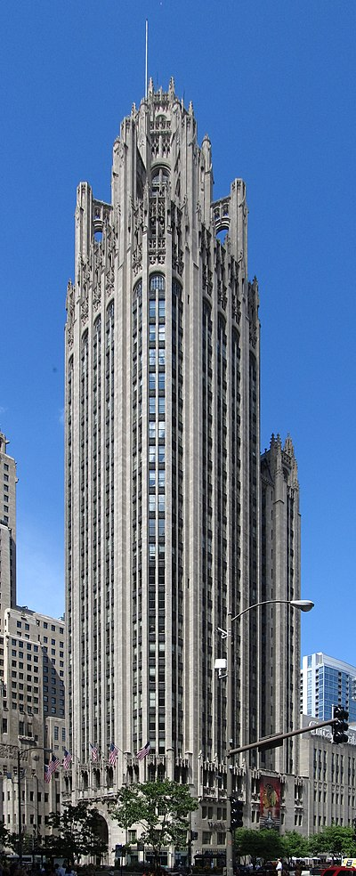

Tribune Tower
트리뷴 타워 는 미국 일리노이주 시카고 의 435 노스 미시간 애비뉴 에 위치한 463피트(141m) 높이의 36층 네오 고딕 양식의 마천루입니다.
1923년에서 1925년 사이에 지어진 이 타워의 국제 디자인 공모전은 20세기 건축의 역사적인 사건이 되었습니다.
타워는 시카고 트리뷴 , 트리뷴 미디어 , 트리뷴 방송 및 트리뷴 출판 의 본거지였습니다.
WGN 라디오 (720kHz)는 2018년 6월 303 Wacker Drive로 이전할 때까지 건물에서 방송을 시작했습니다.
마지막 WGN 라디오 방송은 2018년 6월 18일 트리뷴 타워에서 떠났습니다.
for the building's architects), 현재 폐쇄되었습니다.
근처의 파이오니어 코트 와 미시간 애비뉴 가 내려다보이는 파티오 CNN의 시카고 지국도 이 건물에 있었습니다.
시카고 랜드마크로 등재되어 있으며 미시간–워커 역사 지구 원래 트리뷴 타워는 1868년에 지어졌지만 1871년 시카고 대화재 로 소실되었습니다.
